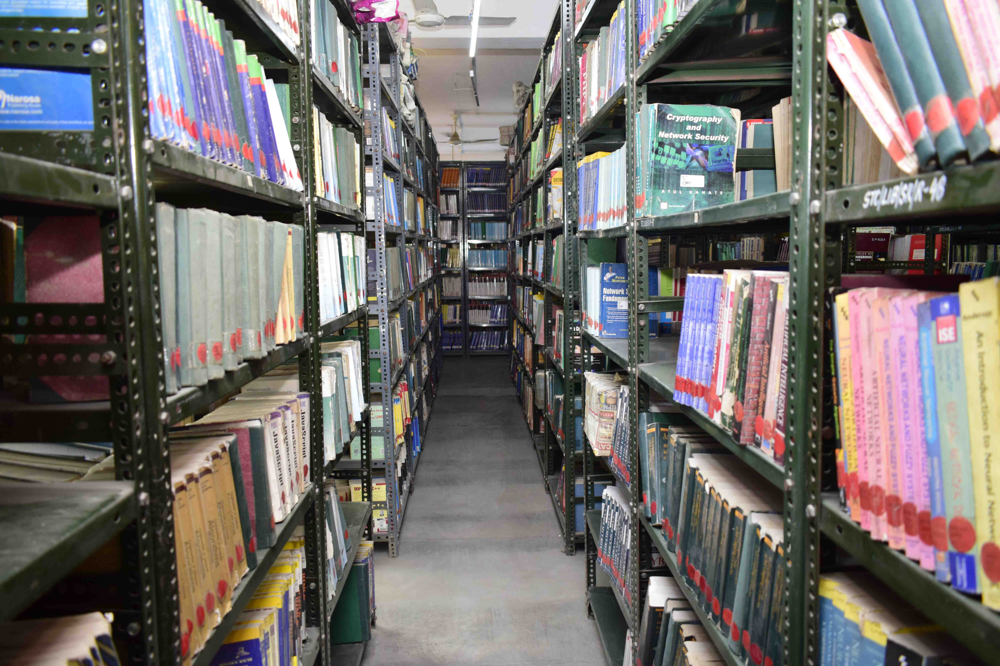
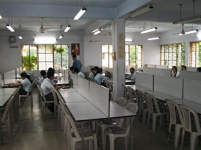

The Central Library and Information Center includes a large collection of books, as well as print journals, technical magazines, and periodicals, and it is spread out across an area of 404.23 square metres. Due to its IP-based design, the Central Library's e-journals are accessible from anywhere on campus. Weekday hours for the Central Library are 9.00 AM to 8 PM, and Saturday hours are 10 AM to 3 PM. The Library offers a variety of reprographic services, including document scanning and photocopying.
Over the whole semester, students may check out 03 books from the library using their library cards and 04 books of their own choosing. Each Department has an own departmental library in addition to the Central Library. There are 28,948 volumes of literature, including reference books and textbooks, in the Central Library's collection. Periodicals, journals, magazines, electronic journals, and electronic books are also offered.